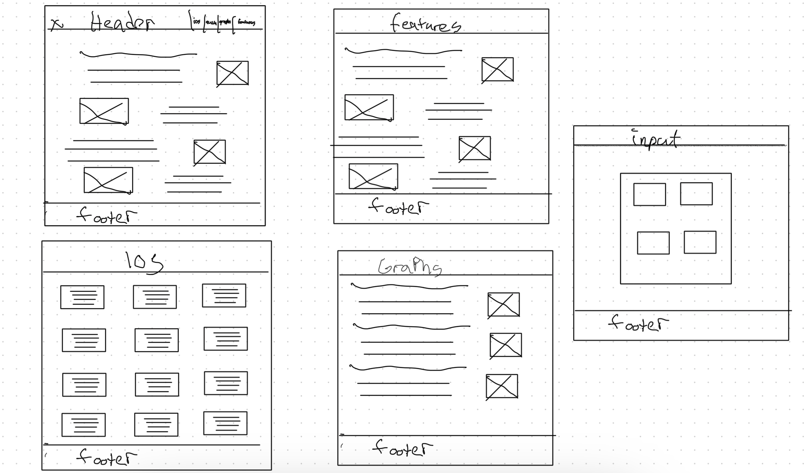

Site Name:History of the iPhone
Site Purpose:Take a retropective look at one of the most influential products in tech history: the iPhone. There is also a form where you can submit your thoughts about the device
Scenerios: How has the iPhone evolved to get to where it is today? what kind of advancements have been made since the iPhone's introduction in 2007
The colorscheme will be red, black, and grey inspired by MKBHD header will be red. Text boxes will have grey background. Black will be a hover color. Black will serve as a accent color that provides contrast as well as provide a beckground for the site itself.
roboto font will be used throughout the site
